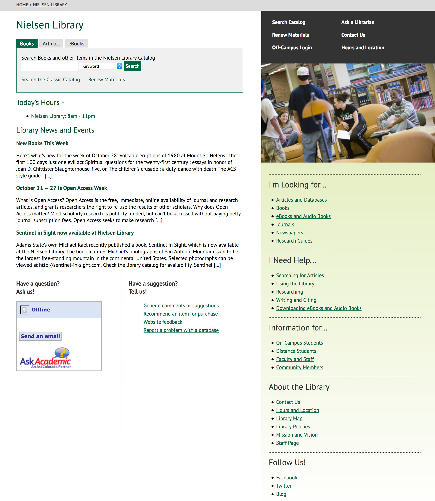

Overview
When I was hired as the Emerging Technologies Librarian at the Nielsen Library at Adams State University one of my first tasks was to redesign the library’s website. Over the course of the university’s summer vacation, I performed a content audit, redesigned the website’s information architecture, created new content, and implemented an updated website.
My role
As the Emerging Technologies Librarian I was solely responsible for the library’s website. I conducted user research, performed a content audit, redesigned the site’s information architecture, and established a content strategy for the website.
The Problem
The Nielsen Library had never had a proper webmaster and the website had been updated on an ad-hoc basis with no content strategy or user research, which resulted in a poorly organized website and outdated information.
Research
I began by performing ethnographic research, including observation and informal interviews to discover how students used the existing website and learn where they were running into problems.
I found that most students had difficulty with the site navigation and weren’t sure where to find the information they needed. They also struggled to understand library jargon like database, catalog, and interlibrary loan.
Information Architecture
Since the visual design of the website was dictated by the university’s style guide, most of my redesign efforts focused on improving the library website’s information architecture.
Content Audit
I started by performing a content audit of the website, creating a content inventory and evaluating each page for accuracy and clarity, and determining the number of page visits and most recent update. In collaboration with the other librarians, I determined which pages should be kept, which should be updated or replaced, and which should be removed.
Card Sorting
Once I determined which pages the new website would contain, I had our end users perform open card sorting to determine what categories made sense to them. I also did a comparative analysis, looking at other academic library websites and how they categorized their content.
Based on my research findings, I created four main categories:
- Resources
- How-to Guides
- Services
- About
I surveyed several undergraduate students to determine the names of the categories and found that they responded better to natural language labels. The final category labels were:
- I'm Looking for...
- I Need Help...
- Information for...
- About the Library
Sitemap
Armed with my card sorting data, I created a sitemap using multi-colored sticky notes and sharpies. I created a sticky note for each page on the website and arranged them within the established categories.
Implementation
Over the next three months, I worked with other librarians to update content and used the university's content management system to create new pages and update the site structure. I performed informal usability testing throughout this process, sending out weekly updates to a group of volunteer students, soliciting their feedback, and iterating as needed.
Results
The new website went live shortly before the beginning of fall term, 2013. I performed usability testing with several undergraduate students and found that overall they didn’t experience any major difficulties with the new site and rated it as much more usable than the previous site.

The new homepage layout
Throughout the remainder of my tenure at Adams State, I continued to monitor website analytics, and perform ethnographic research and usability testing to ensure that the library website was well organized and user-centered.